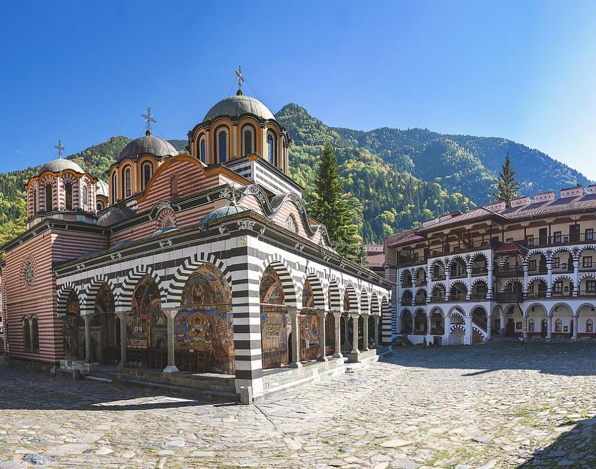

Културно-историческото наследство
 Културно-историческото наследство на територията на ПП “Рилски манастир” е огромно. В подстъпите на Парка се намира гр. Рила. Тук може да се види една от най-старите черкви в района – “Св. Архангел Михаил”, която е обявена за национален паметник на културата и в момента е в реставрация. В Рила може да се види и архитектурно-историческият комплекс Бабинска махала.
Културни паметници
На територията на природния парк "Рилски манастир" се намира богатство от културни и исторически обекти. В подножието на парка е разположен град Рила, където се намира една от най-старите църкви в района - "Св. Архангел Михаил". Обявена за национален паметник на културата, тя в момента се реставрира. Архитектурно-историческият комплекс "Бабинска махала" в Рила впечатлява с ансамбъл от запазени къщи, които са паметници на културата с местно значение.
Рилски манастир
В сърцето на парка се намира Рилският манастир, създаден през 10-ти век от Иван Рилски. Той е не само духовен, но и културен център, съхраняващ ценни исторически документи, ръкописи, икони и утвар. Със своя уникален архитектурен облик, създаден през 19-ти век, манастирът привлича множество посетители. През 1983 г. е включен в списъка на ЮНЕСКО като паметник на световното културно наследство.
Метоси и постници
Близо до манастира са разположени два метоха – "Орлица" и "Пчелино". Метох "Орлица" е един от най-старите и има храм, посветен на апостолите Петър и Павел, изграден през 1469 г. В двора му расте лозница, засадена през 19-ти век. Метох "Пчелино" е свързан със стопанската дейност на манастира и включва църквата "Успение Богородично", известна със своите фрески и икони.
Други исторически ансамбли
На североизток от манастира, високо в планината, се намират архитектурно-историческите ансамбли "Постницата Св. Иван Рилски" и "Св. Евангелист Лука". Постницата "Св. Иван Рилски" е първоначалното място на гроба на светеца, а "Св. Евангелист Лука" е дом на първото светско училище, създадено от Неофит Рилски.